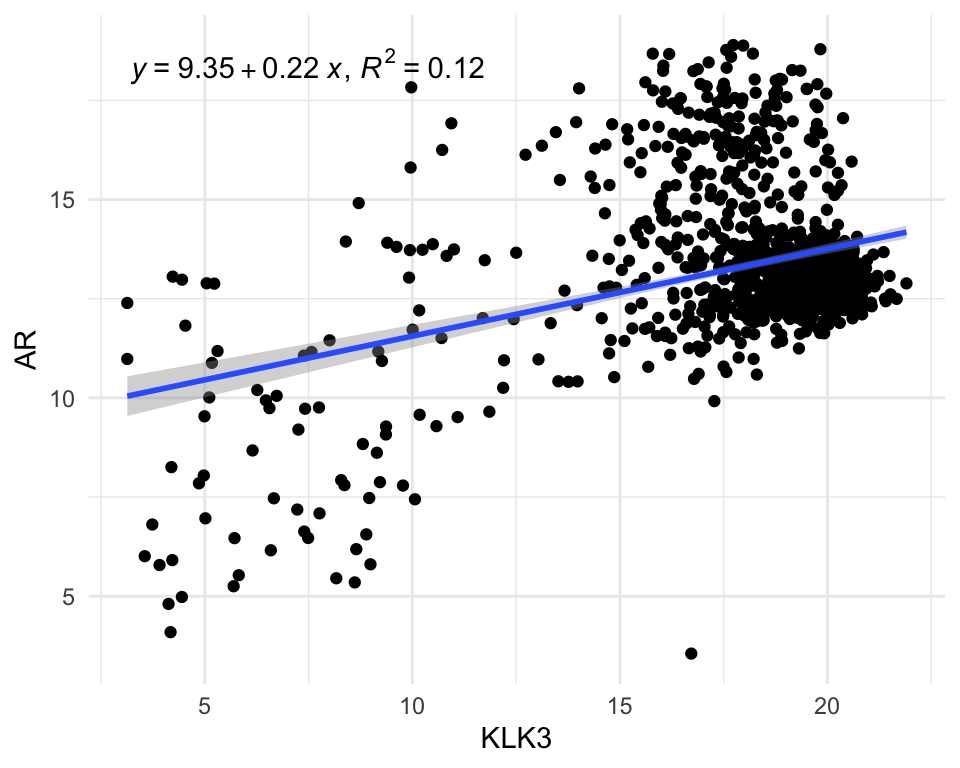
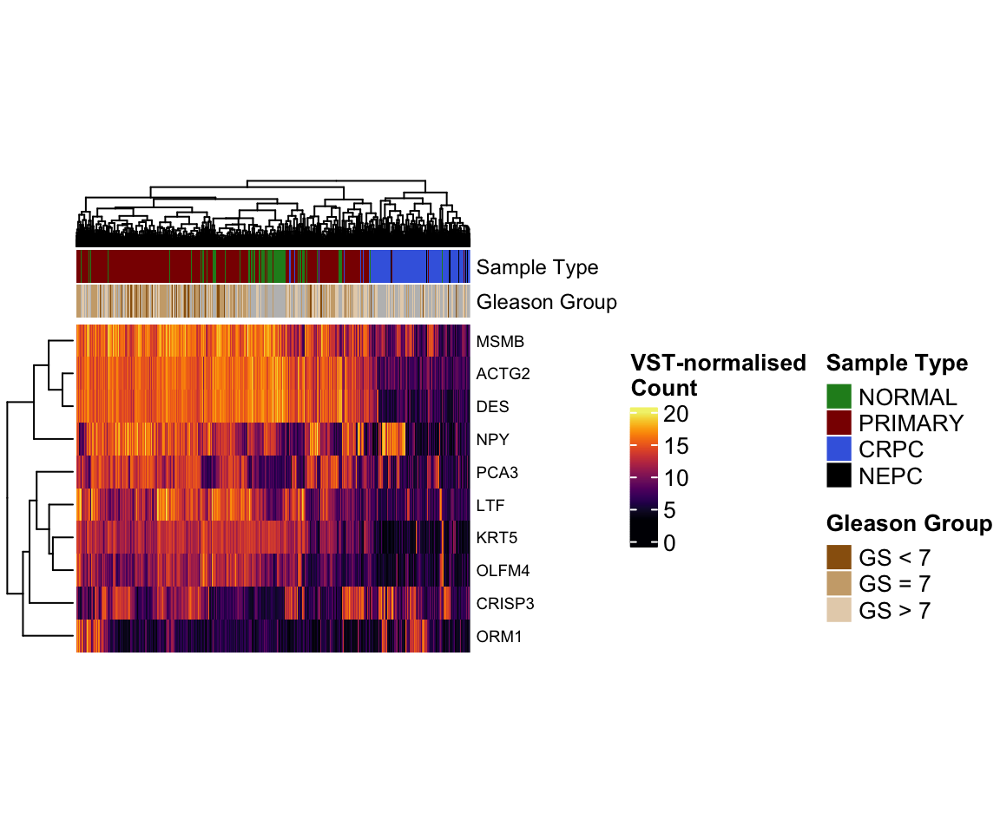
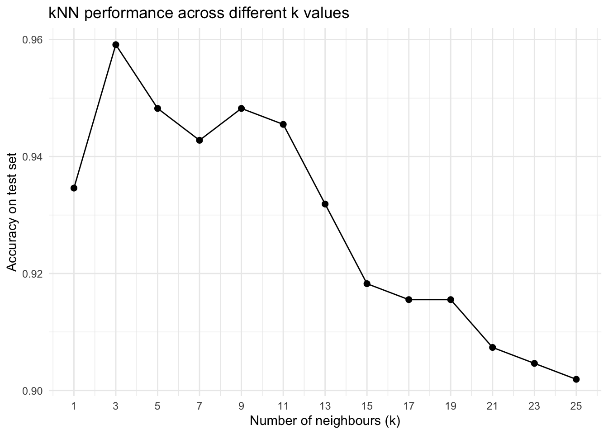

EMBL PHD Course 2025 Introduction to R
Nora Liu
SAiGENCI, University of Adelaide, Adelaide, SA 5000, AustraliaAdelaide Centre of Epigenetics, School of Biomedicine, University of Adelaide, Adelaide, SA 5000, Australianora.liu@adelaide.edu.au
Last updated: 2025-11-30
Checks: 7 0
Knit directory: Introduction_to_R/
This reproducible R Markdown analysis was created with workflowr (version 1.7.1). The Checks tab describes the reproducibility checks that were applied when the results were created. The Past versions tab lists the development history.
Great! Since the R Markdown file has been committed to the Git repository, you know the exact version of the code that produced these results.
Great job! The global environment was empty. Objects defined in the global environment can affect the analysis in your R Markdown file in unknown ways. For reproduciblity it’s best to always run the code in an empty environment.
The command set.seed(20251128) was run prior to running
the code in the R Markdown file. Setting a seed ensures that any results
that rely on randomness, e.g. subsampling or permutations, are
reproducible.
Great job! Recording the operating system, R version, and package versions is critical for reproducibility.
Nice! There were no cached chunks for this analysis, so you can be confident that you successfully produced the results during this run.
Great job! Using relative paths to the files within your workflowr project makes it easier to run your code on other machines.
Great! You are using Git for version control. Tracking code development and connecting the code version to the results is critical for reproducibility.
The results in this page were generated with repository version 51d13a0. See the Past versions tab to see a history of the changes made to the R Markdown and HTML files.
Note that you need to be careful to ensure that all relevant files for
the analysis have been committed to Git prior to generating the results
(you can use wflow_publish or
wflow_git_commit). workflowr only checks the R Markdown
file, but you know if there are other scripts or data files that it
depends on. Below is the status of the Git repository when the results
were generated:
Ignored files:
Ignored: .DS_Store
Ignored: .Rproj.user/
Untracked files:
Untracked: .Rprofile
Untracked: .gitattributes
Untracked: .gitignore
Untracked: Introduction_to_R.Rproj
Untracked: _workflowr.yml
Untracked: analysis/
Untracked: code/
Untracked: data/
Untracked: output/
Unstaged changes:
Modified: README.md
Note that any generated files, e.g. HTML, png, CSS, etc., are not included in this status report because it is ok for generated content to have uncommitted changes.
There are no past versions. Publish this analysis with
wflow_publish() to start tracking its development.
# Install all packages needed for this workshop
# CRAN packages
install.packages(c(
"tidyverse",
"magrittr",
"readxl",
"here",
"uwot",
"ggpubr",
"ggpmisc",
"viridis",
"class"
))
# Bioconductor packages
if (!requireNamespace("BiocManager", quietly = TRUE))
install.packages("BiocManager")
BiocManager::install("ComplexHeatmap")Welcome
Welcome to the 2025 EMBL Australia PhD Course: Introduction to R.
In this two hour session, we will cover the essentials of working with biological data in R, including:
Importing and manipulating data
performing simple dimension reduction
Visualising gene expression using plots such as boxplots and heatmaps and carrying out basic statistical tests
Building simple machien learning classifier
This workshop is designed for participants with little or no coding or bioinformatics experience. We will work through the code together, and I encourage you to type out all of the code yourself if possible. Along the way, there will be a few short challenge exercises for you to try.
Getting familar with Rstudio
In this workshop we will work within RMarkdown, which lets us combine code, output and narrative text in a single, reproducible document. This makes it easy to keep your analysis, explanations and figures together in one place.
Our project is organised using the workflowR structure. workflowR provides a simple but powerful framework for reproducible research, with a consistent folder layout, version tracking, and automatic website generation. As we work through the exercises, you will see how scripts, data and results fit neatly into this structure, helping you develop good habits for organising and sharing your analyses.
Try inserting a code chunk and calculate the square root of 123
Getting today’s data
For today’s workshop we will use the prostate atlas dataset from Bolis et al. (2021). In this study, the authors assembled and integrated bulk RNA-seq profiles from clinical prostate samples spanning normal tissue, primary prostate cancer, metastatic castration-resistant prostate cancer (CRPC), and neuroendocrine prostate cancers (NEPC).
You can access the dataset from the corresponding Zenodo repository:
https://zenodo.org/records/5546618. Please download the
pcatlas_dataset.zip folder to the data folder of this
project. The downloaded folder should contains 2 files. We will read
them into R using the following code:
library(tidyverse)vst_count <- read_table(here::here("data/pcatlas_dataset/pcatlas_dataset_vst_normalized.txt"))
pcatlas_meta <- readxl::read_excel(here::here("data/pcatlas_dataset/pcatlas_dataset_annotations.xlsx")) %>%
mutate(`Sample Type` = factor(`Sample Type`, levels = c("NORMAL","PRIMARY","CRPC","NEPC" )))But there’s a problem with loading the data like that. Could you tell what it is?
To resolve the problem, we are going to skip the first row of the count matrix and manually define column names.
library(magrittr)
vst_count <- read_table(here::here("data/pcatlas_dataset/pcatlas_dataset_vst_normalized.txt"), skip = 1) %>%
set_colnames(c("gene_id",pcatlas_meta$Entry)) %>%
column_to_rownames("gene_id")Dimension reduction
PCA
In Figure 1 of the paper, the authors present a principal component analysis (PCA) plot coloured by disease stage. We will now try to reproduce this figure.
(PCA is a dimensionality-reduction method that identifies new axes, called principal components, which capture the greatest variation in the data by finding the directions along which the samples differ the most.)

Figure 1 from Bolis et al.
According to the Methods, the PCA was performed using the 2000 most variable genes. To follow the same approach, we will begin by extracting the top 200 genes with the highest variance.
top2000 <- apply(vst_count, 1, var) %>%
sort(decreasing = T) %>%
.[1:2000] %>%
names()In R, PCA can be achieved using prcomp function.
pca <- vst_count %>%
.[rownames(.) %in% top2000, ] %>%
t() %>%
prcomp()
pca_df <- pca$x %>%
as.data.frame() %>%
rownames_to_column("Entry") %>%
dplyr::select(Entry, PC1, PC2) %>%
left_join(pcatlas_meta)
pca_import <- scales::percent(summary(pca)$importance["Proportion of Variance", ], 0.1) %>%
paste(names(.), ., sep = ": ")The resulting pca_df is a data.frame that
we can then visualise using ggplot2 package.
type_cols <- c("darkred", "black", "royalblue", "forestgreen") %>%
set_names(c("PRIMARY", "NEPC","CRPC", "NORMAL"))
pca_df %>%
ggplot(aes(-PC1, PC2, color = `Sample Type`)) +
geom_point(size = 2.5, alpha = 0.8) +
scale_color_manual(values = type_cols) +
labs(
x = pca_import[1], y = pca_import[2]
) +
theme_minimal()Post-normalisation & post-integration PCA plot.
theme_set(theme_minimal())Try modifying the plot so that each point’s shape represents the
sample’s Library Type and add a title to the plot.
UMAP
Since this dataset contains 1223 samples, PCA can become visually crowded. Another way to explore the same high-dimensional data is to use Uniform Manifold Approximation and Projection (UMAP), which projects the samples into a two-dimensional space while preserving their underlying structure.Unlike PCA, which captures variation through linear combinations of the original features, UMAP uses nonlinear relationships to better separate samples with similar patterns.
To compute UMAP, we can use the following code:
library(uwot)
set.seed(123) # for reproducibility
umap_res <- vst_count %>%
.[rownames(.) %in% top2000, ] %>%
t() %>%
umap(
n_neighbors = 15,
min_dist = 0.3,
metric = "euclidean"
)
umap_df <- umap_res %>%
as.data.frame() %>%
setNames(c("UMAP1", "UMAP2")) %>%
mutate(Entry = colnames(vst_count)) %>%
left_join(pcatlas_meta, by = "Entry")Now try generating a UMAP plot using the umap data.frame to see how the samples cluster using this alternative dimension reduction visualisation
How can we put the PCA and UMAP plot together side-by-side?
Visualise gene expression
It’s often useful to visualise the expression of one or two genes as a quick sanity check. To do this, we first need to reshape the count matrix into a long format and match Ensembl gene id to gene names.
I previously downloaded the genome annotation information and saved
it as an RDS file in the data folder. It’s a
data.frame that we can use to match gene_id to gene
name.
genesGR <- readRDS(here::here("data/genesGR.rds"))vst_count_geneName <- vst_count
geneNames <- genesGR %>%
as.data.frame() %>%
.[match(rownames(vst_count_geneName), .$gene_id),] %>%
pull(gene_name)
gene2keep <- !duplicated(geneNames)&!is.na(geneNames)&geneNames != ""
vst_count_geneName <- vst_count_geneName %>%
.[gene2keep, ]
rownames(vst_count_geneName) <- geneNames[gene2keep]
vst_count_geneNameScatter plot
Now we can easily visualise the relationship between two genes, for example: androgen receptor (AR) and KLK3 (PSA gene).
library(ggpmisc)
vst_count_geneName %>%
.[rownames(.) %in% c("AR", "KLK3"),] %>%
t() %>%
as.data.frame() %>%
rownames_to_column("Entry") %>%
left_join(pcatlas_meta) %>%
ggplot(
aes(KLK3, AR)
) +
geom_point() +
stat_poly_line() +
stat_poly_eq( use_label(c("eq", "R2"))) 
After having a count matrix with gene name as rownames, we can also
use pivot_longer to make it into long format.
vst_count_df <- vst_count_geneName %>%
rownames_to_column("gene_name") %>%
pivot_longer(
cols = -"gene_name",
values_to = "VST_count",
names_to = "Entry"
) %>%
left_join(pcatlas_meta)
vst_count_dfViolin/Box plot
The long format allows us to visualise distribution of genes across groups easily.
vst_count_df %>%
dplyr::filter(gene_name == "AR") %>%
ggplot(
aes(`Sample Type`, VST_count, fill = `Sample Type`)) +
geom_violin()+
#geom_point() +
scale_fill_manual(values = type_cols)VST count of AR in different sample groups.
Could you convert the violin plot to a boxplot?
Adding significance to the plot
Comparing gene expression between groups in RNA-seq normally requires
proper differential expression analysis, which is statistically complex
and NOT something that can be done with a simple
t-test. However, to demonstrate how to add significance to a
plot and run basic statistical tests in R, we will use a
ggpubr function to perform a one-way ANOVA. This will let
us test whether the mean AR expression differs across the different
sample-type groups.
library(ggpubr)
vst_count_df %>%
dplyr::filter(gene_name == "AR") %>%
ggboxplot(x = "Sample Type", y = "VST_count",
color = "Sample Type")+
stat_compare_means(method = "anova") +
scale_color_manual(values = type_cols)VST count of AR in different sample groups with one-way ANOVA p-value.
The significant p-value indicates that there’s difference in group means but we dont know between which groups. To find out about that, we will perform pariwise test.
my_comparisons <- list( c("NORMAL", "PRIMARY"), c("NORMAL", "CRPC"), c("PRIMARY", "CRPC"),c("PRIMARY", "NEPC"))
vst_count_df %>%
dplyr::filter(gene_name == "AR") %>%
ggboxplot(x = "Sample Type", y = "VST_count",
color = "Sample Type")+
stat_compare_means(comparisons = my_comparisons, method = "t.test",
#label = "p.signif"
)+ # Add pairwise comparisons p-value
scale_color_manual(values = type_cols)
VST count of AR in different sample groups with one-way ANOVA p-value.
Adding facet
facet_wrap() in ggplot2 splits your data
into groups and makes a separate small plot for each group, arranging
all the plots neatly in a grid. Utilising facet_wrap we can
easily plot the expression of both AR and KLK3 in one plot.
vst_count_df %>%
dplyr::filter(gene_name %in% c("AR", "KLK3")) %>%
ggplot(
aes(`Sample Type`, VST_count, fill = `Sample Type`)) +
geom_violin()+
#geom_point() +
scale_fill_manual(values = type_cols) +
facet_wrap(~gene_name)VST count of AR and KLK3 in different sample groups.
facet_grid() does something similar, but lets you create
a grid where one variable defines the rows and another defines the
columns.
vst_count_df %>%
dplyr::filter(gene_name %in% c("AR", "KLK3")) %>%
ggplot(
aes(`Sample Type`, VST_count, fill = `Sample Type`)) +
geom_violin()+
#geom_point() +
scale_fill_manual(values = type_cols) +
facet_grid(`Library Type` ~ gene_name)VST count of AR and KLK3 in different sample groups and library type.
Heatmap
But what if you want to visualise the expression of many genes across
all samples at once? In that situation, a heatmap is the most effective
choice. For example, let’s plot the top 10 most variable genes using the
ComplexHeatmap
package.
top10 <- apply(vst_count_geneName, 1, var) %>%
sort(decreasing = T) %>%
.[1:10] %>%
names()Because there are so many samples, I set
show_column_names = FALSE to hide the sample names. But how
can we make this heatmap more informative? We can already see patterns
of expression differences across samples, but it is not yet clear
whether those differences correspond to meaningful biological
groups.
temp <- vst_count_geneName %>%
.[rownames(.) %in% top10,]
library(grid)
library(ComplexHeatmap)
library(viridis)
hp <- temp %>%
Heatmap(
col = viridis_pal(option = "B")(100),
show_column_names = F,
width = unit(6, "cm"),
height = unit(5, "cm"),
name = "VST-normalised\nCount",
row_names_gp = gpar(fontsize = 7),
)
draw(hp)VST-normalised count of the top 10 most variant genes.
Complexheatmap allows us to add additional information
associated with rows or columns as heatmap annotations. In the heatmap
below, we added the pathological group and gleason score of each sample
as column annotation.
col_anno <- pcatlas_meta %>%
mutate(
`Gleason Group` = case_when(
`Gleason Score` %in% c("5.0" , "6.0" ) ~ "GS < 7",
`Gleason Score` == "7.0" ~ "GS = 7",
`Gleason Score` %in% c("8.0" , "9.0", "10.0" ) ~ "GS > 7",
`Gleason Score` == "NA" ~ NA
)
) %>%
dplyr::select(Entry, `Sample Type`,`Gleason Group`
) %>%
column_to_rownames("Entry")
hp <- temp %>%
Heatmap(
col = viridis_pal(option = "B")(100),
show_column_names = F,
width = unit(6, "cm"),
height = unit(5, "cm"),
name = "VST-normalised\nCount",
row_names_gp = gpar(fontsize = 7),
top_annotation = HeatmapAnnotation(
df = col_anno, which = "column",
col = list(
`Sample Type` = type_cols,
`Gleason Group` = c("#99600F","#CCAA7A","#E6D2B8" ) %>%
set_names(c("GS < 7", "GS = 7", "GS > 7"))),
annotation_name_gp = gpar(fontsize = 9)
)
)
draw(hp)
ML Classifier
For the last part of the workshop, we will build a simple k-nearest neighbours (kNN) classifier to predict the Sample Type of each sample based on its gene expression profile. We will train the classifier using the most variable genes and then evaluate how well it can distinguish NORMAL, PRIMARY TUMOUR, CRPC and NEPC samples.
k-Nearest Neighbours (kNN) is a simple classification method that predicts a sample’s label by finding the k most similar samples in the training data and assigning the label that appears most often among them.
Schematic illustration of how kNN calssification work (adopted from Statiml blog).
To begin with, we will randomly split the data into 70% training and 30% testing set.
set.seed(123) # for reproducibility
expr_mat <- vst_count %>%
.[rownames(.) %in% top2000, ] %>%
t()
labels <- as.character(pcatlas_meta$`Sample Type`)
n_samples <- nrow(expr_mat)
train_idx <- sample(seq_len(n_samples), size = floor(0.7 * n_samples))
x_train <- expr_mat[train_idx, ]
x_test <- expr_mat[-train_idx, ]
y_train <- labels[train_idx]
y_test <- labels[-train_idx]We will train the model using k=5 as a starting
point.
library(class)
# k = 5 is a common simple choice
knn_pred <- knn(
train = x_train,
test = x_test,
cl = y_train,
k = 5
)Next we create a confusion matrix to show how many samples were correctly or incorrectly classified in each category.
# confusion matrix
cm <- table(
Truth = y_test,
Predicted = knn_pred
)
cmAdditionally, we can calculate the accuracy as the number of correct predictions divided by the total number of samples.
# overall accuracy
accuracy <- sum(diag(cm)) / sum(cm)
accuracyLet’s run KNN across different k values and see how accuracy changes.
k_values <- seq(1, 25, by = 2) # 1, 3, 5, ..., 25
knn_results <- map_df(
k_values,
~{
pred <- knn(
train = x_train,
test = x_test,
cl = y_train,
k = .x
)
cm <- table(Truth = y_test, Predicted = pred)
acc <- sum(diag(cm)) / sum(cm)
tibble(
k = .x,
accuracy = acc
)
}
)
ggplot(knn_results, aes(x = k, y = accuracy)) +
geom_line() +
geom_point(size = 2) +
scale_x_continuous(breaks = k_values) +
labs(
x = "Number of neighbours (k)",
y = "Accuracy on test set",
title = "kNN performance across different k values"
)
Pleas note that in real applications, this simple kNN approach is usually not the best method for predicting sample types from RNA-seq data, because high-dimensional gene expression requires more robust models, careful feature selection, and proper cross-validation to avoid overfitting.
sessionInfo()